My suburb
is
Origins
13th century
Pā on Ōhinerau / Mount Hobson
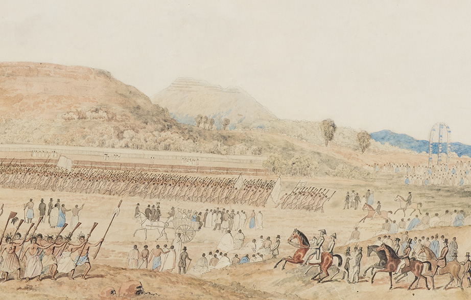Origins
Remu-wera
"Edge Burnt (of a Piupiu)"
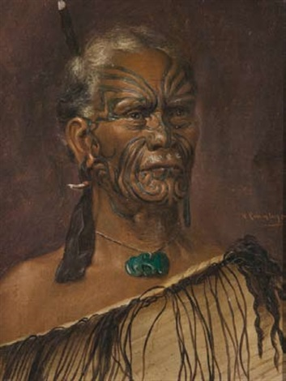Origins
Largest Māori feast (1844)
 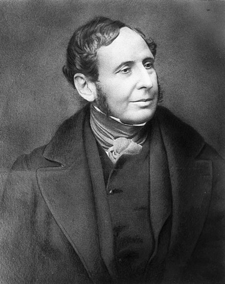
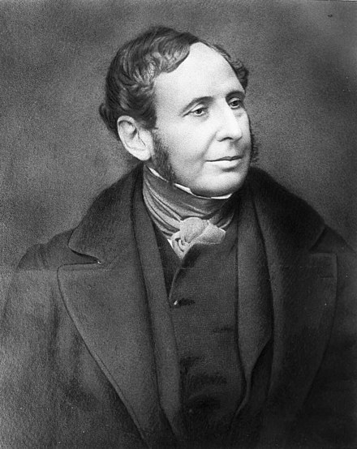
Origins
Henry Tacy Kemp (1851)
700 acres for £5,000
= 2.8 km² for $1,363,107
Origins
Young Remuera suburb
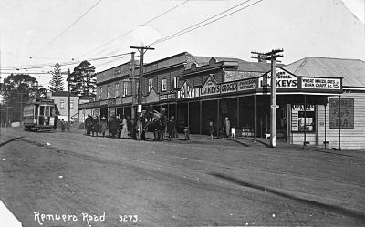
- Schools (1873)
- Shops (1890)
- Electric tram (1902)
Origins
Young Remuera suburb
- Tudor Theatre (1928)
- Buses (1956)
- Tudor Mall (1980)
Places of interest
Ōhinerau / Mount Hobson
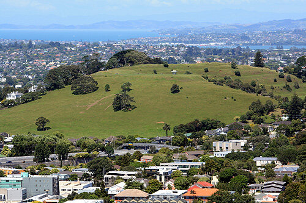
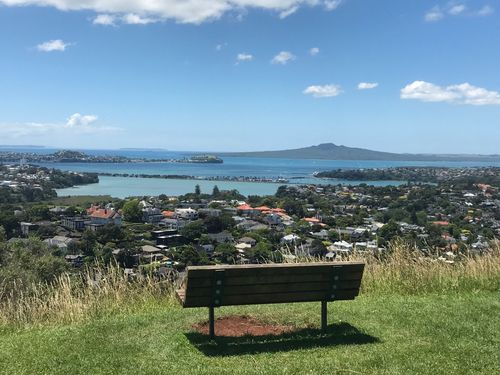
Places of interest
Orakei Basin
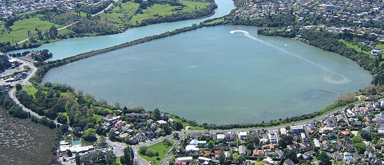
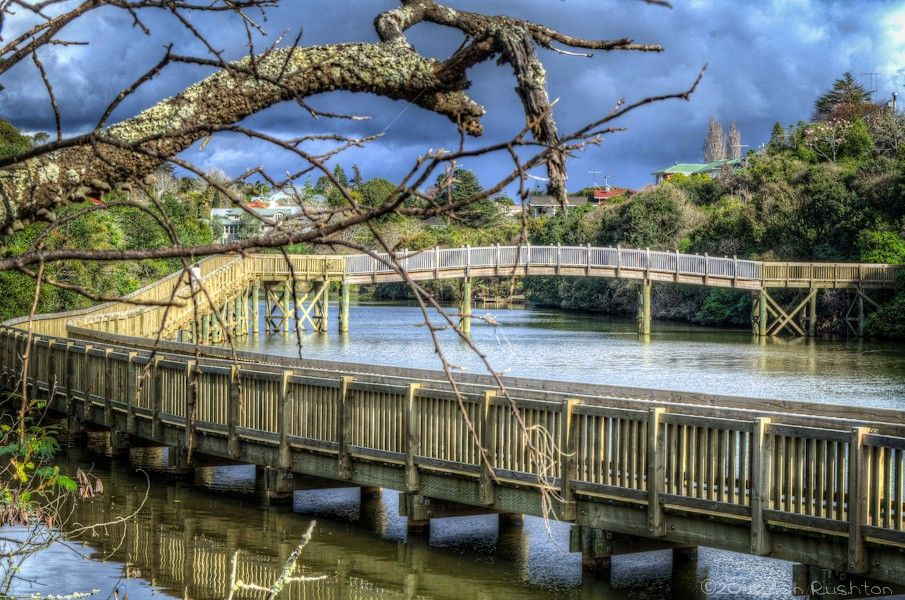
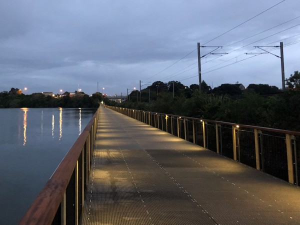
Places of interest
Waiatarua Reserve
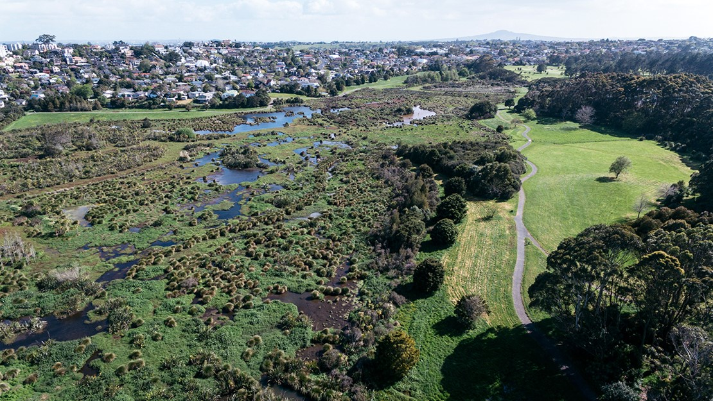
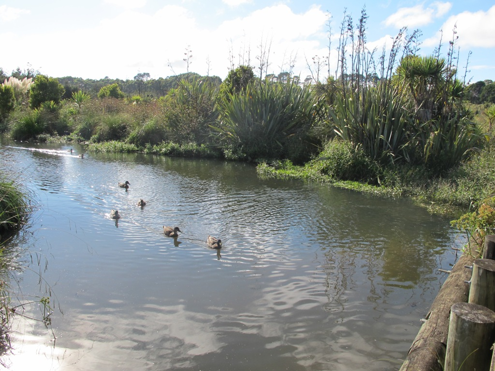
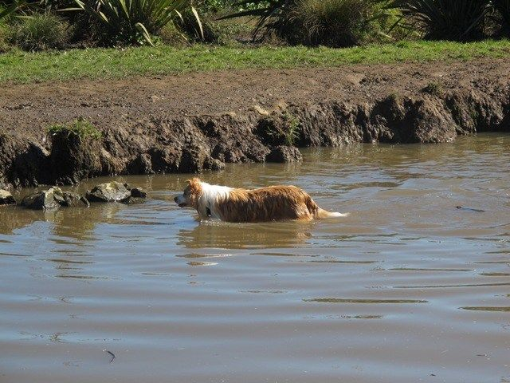
Places of interest
Remuera Public Library
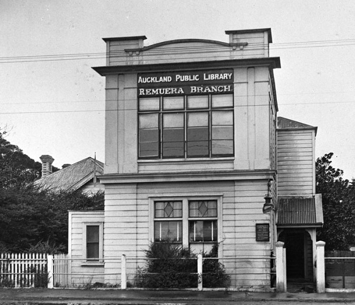
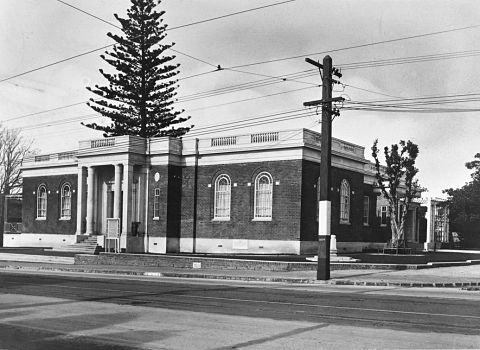
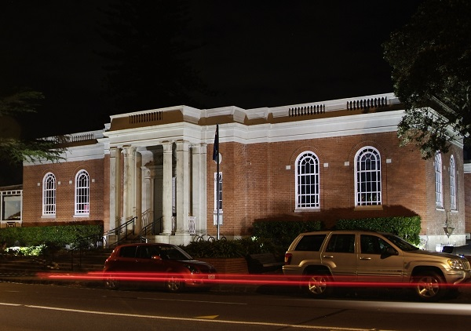
Places of interest
St Lukes Presbyterian Church

Geography

Demographics
Historical population
| Year | Pop. | ±% p.a. |
|---|---|---|
| 2006 | 22,668 | — |
| 2013 | 23,253 | +0.36% |
| 2018 | 23,586 | +0.28% |
Demographics
Ethnicity
Notable residents
- Alfred George Horton
- Archibald Clark
- Desley Simpson
- Hon. Joseph Tole
- James Clark
- James Dilworth
- James Pascoe
- Jean Batten
- Joseph Newman
- Rev John Kinder
- Sir Edwin Mitchelson
- Sir John Reed
- Sir Paul Holmes
- Thomas Cotter
- William Chisholm Wilson
- William Crowther
Notable residents
Sir Edmund Hillary (1919–2008)

Notable residents
Bruce McLaren (1937–1970)
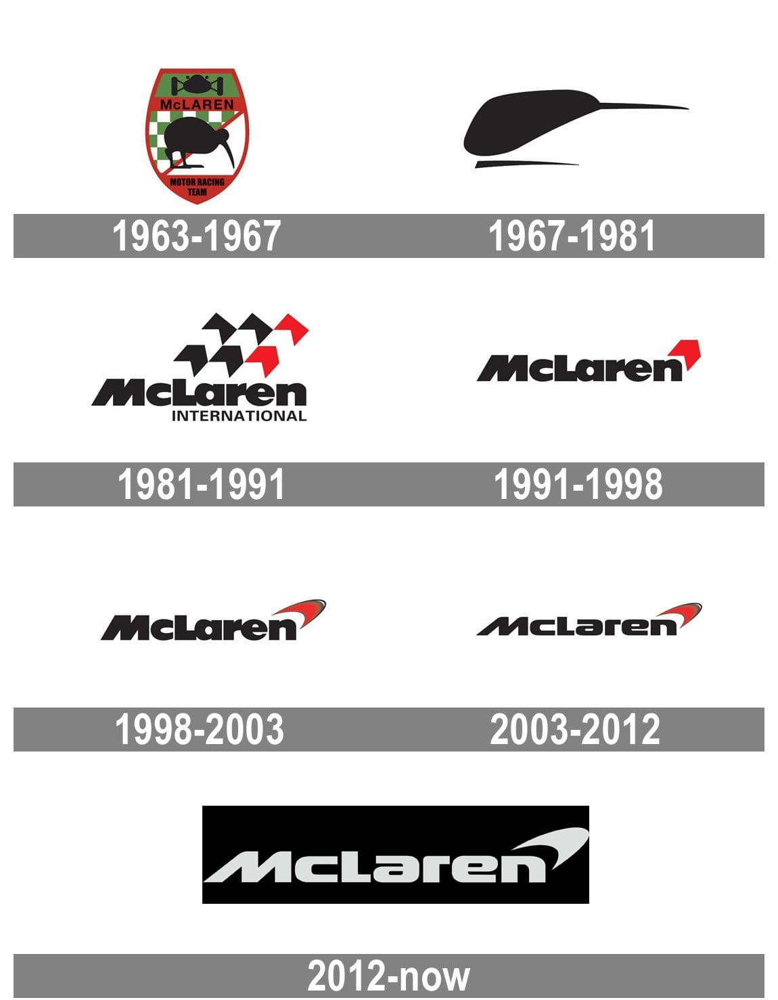
Notable residents
Dame Rosie Horton


Queen's Service Medal
 Companion of the Queen's Service Order
Companion of the Queen's Service Order
New Zealand Order of Merit
Companion of the Queen's Service Order
Honorable Mention
Sailing Ship Remuera
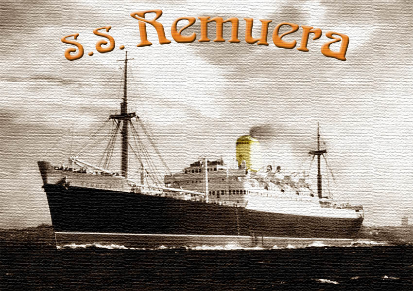
Thanks for your attention
- alagos.github.io/remuera-talk
- Questions?